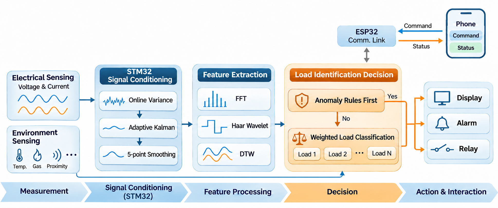

工程项目
智安家居：边缘用电监测与负载识别终端
交通与电气工程学院
大连科技学院
竞赛项目

项目概述
智安家居将电气测量转换为易于理解的负载状态与本地响应。终端结合电压、电流采集以及温度、气体通道和接近输入，串联信号处理、负载识别、显示、告警与继电器控制。
核心设计是端侧决策路径：异常规则先于普通负载分类执行。STM32 承担主要计算，ESP32 则将测量值、状态更新和检测指令连接到手机界面。
竞赛任务
2026 年 CIMC“西门子杯”自由探索方向要求团队围绕调研得到的实际需求，设计一款基于人工智能技术的产品。初赛内容包括产品与商业方案、技术设计文件、初步硬件原型、视频演示与测试。
我们的方案是具备本地负载解释与联网交互能力的用电监测终端，提交了设计方案、产品使用说明书、原型测试表、展示 PPT 及演示材料。
系统架构
STM32F103C8T6 处理 16 点电压、电流窗口。韦尔福德在线统计描述均值与波动，自适应卡尔曼阶段调整测量噪声权重，五点 Savitzky–Golay 平滑抑制高频波动并保留启动形状。
分类器结合运行点统计、FFT 能量、Haar 高频细节和 DTW 波形模板距离。电流快速上升与电压下降优先进入异常判断；其余样本由多种特征得分加权投票，输出无负载、灯泡或小型电机状态。
OLED、LED、蜂鸣器与继电器提供本地反馈和动作。PC14 按键或手机均可启动检测，PC13 恢复等待界面。ESP32 与 STM32 交换结果摘要及启动命令，使本地处理与远程交互各自保持清晰路径。
实现代码节选
代码讲解材料中自适应测量噪声更新如下：运行方差改变观测权重。
float Adaptive_Kalman_Update(KalmanFilter *kf, float measurement, float current_variance) {
float dynamic_R = kf->R + (current_variance * 0.5f);
kf->P = kf->P + kf->Q;
kf->K = kf->P / (kf->P + dynamic_R);
kf->X = kf->X + kf->K * (measurement - kf->X);
kf->P = (1.0f - kf->K) * kf->P;
return kf->X;
}来源：提供的竞赛代码讲解，第 1–2 页。
我的工作
我独立完成了嵌入式程序、硬件原理图与 PCB 设计、硬件焊接、整机集成联调与问题排查，将测量处理、负载判断、本地反馈和通信接口接成完整链路。
我使用 OpenSCAD 进行外壳建模，并完成手机界面与系统的集成。
竞赛成果
项目测试表记录了五类已完成的功能：受控疑似短路识别、灯泡与电机分类、近距触发、本地与 APP 结果一致性，以及无负载状态指示。展示材料还记录了本地告警与继电器控制链路。
项目获得 2026 年 CIMC“西门子杯”中国智能制造挑战赛全国初赛（华北一赛区）智能制造创新研发类赛项·自由探索方向二等奖。